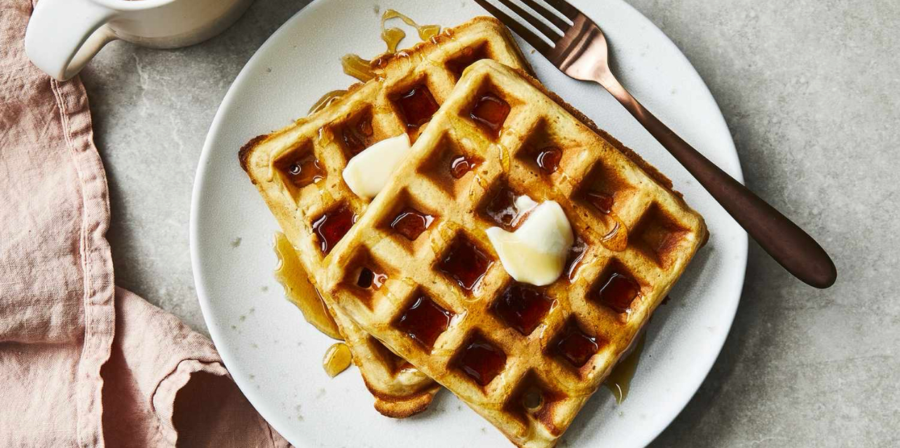

Classic Waffles

Quick and Easy Waffles
These are the waffles that you think of when you think of waffles.
Ingredients
- 2 cups all-purpose flour
- 2 tablespoons white sugar
- 4 teaspoons baking powder
- 1 teaspoon salt
- 1 1/2 cups warm milk
- 2 eggs
- 1/3 cup melted butter
- 1 teaspoon vanilla extract
Steps
- Preheat waffle iron.
- In a large bowl, mix together flour, salt, baking powder, and sugar.
- In a separate bowl, beat the eggs. Stir in the milk, butter, and vanilla.
- Pour the liquid mixture into the dry mixture and beat until blended and smooth.
- Pour batter onto the preheated waffle iron and cook until golden brown.